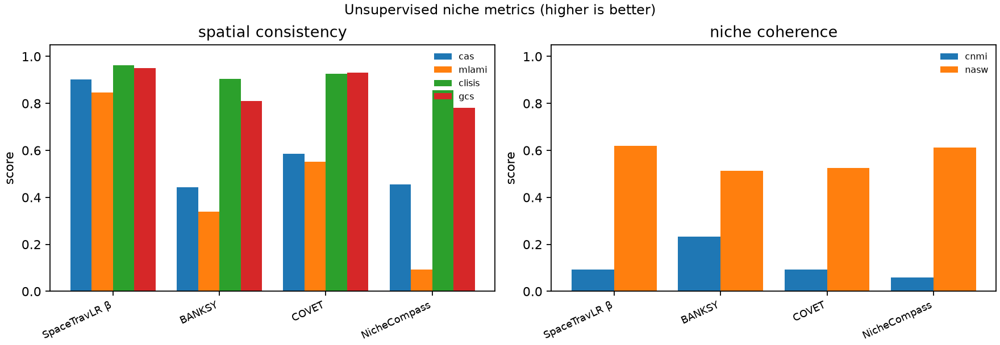
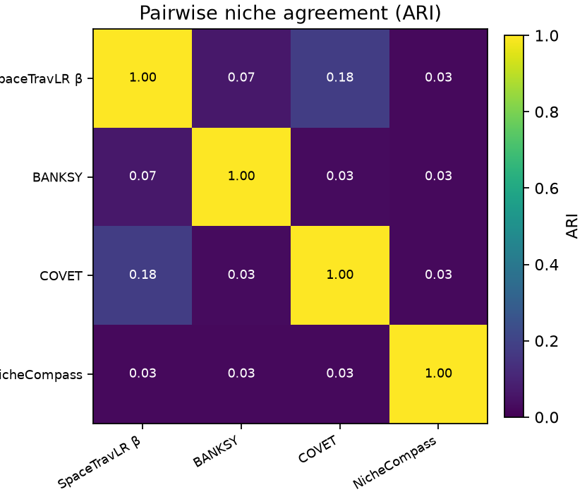
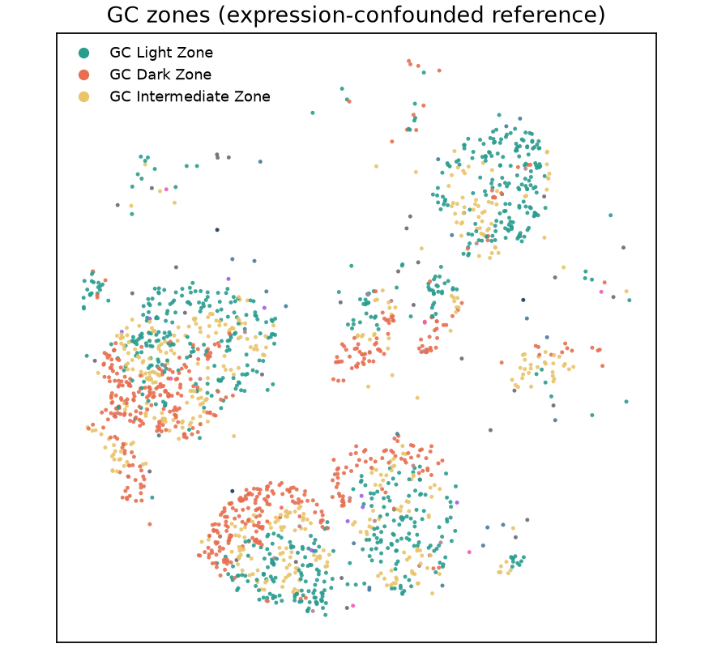
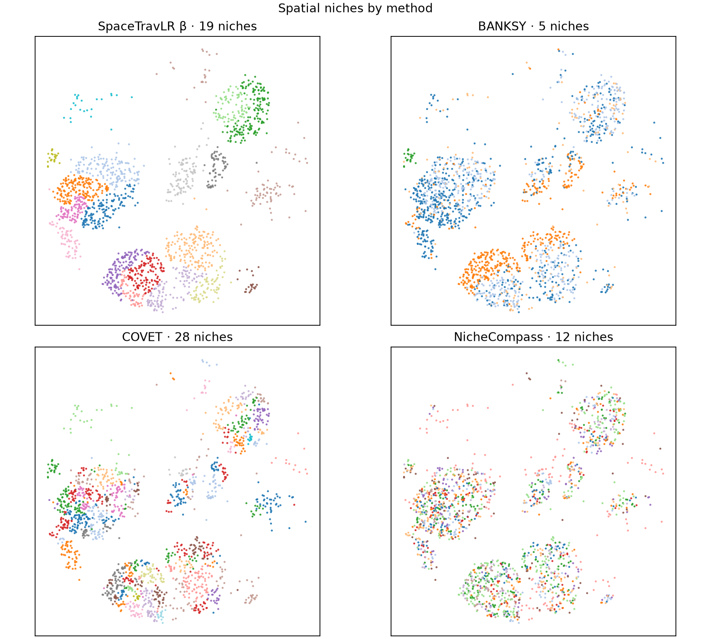
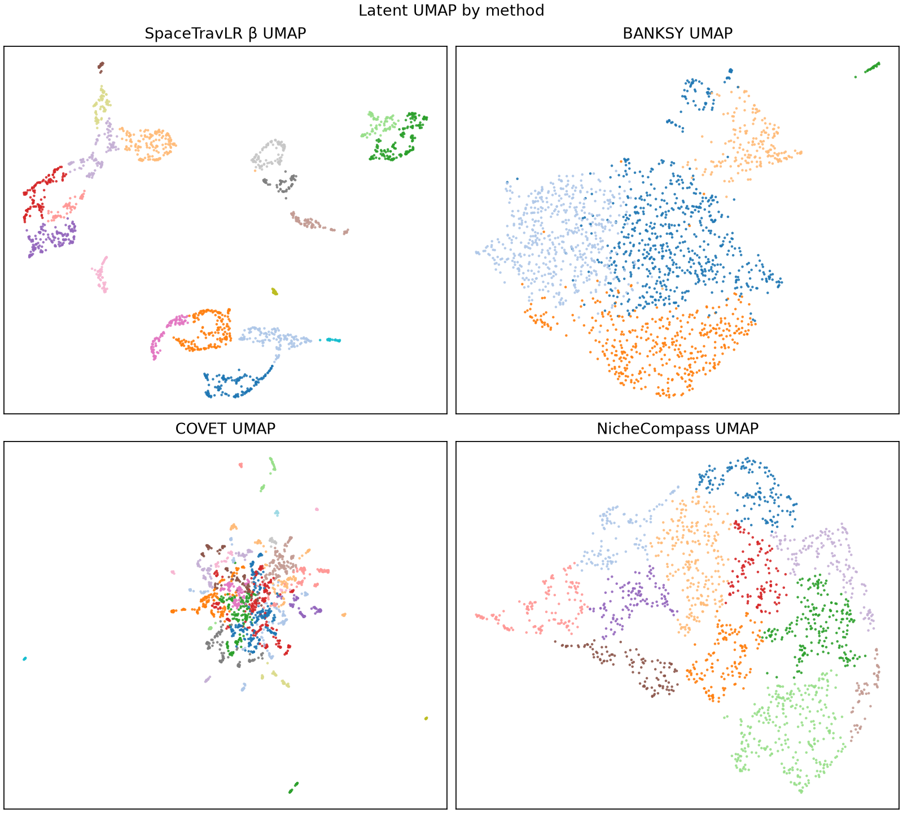

Tonsil GC · Method comparison
β niches vs BANKSY, COVET, NicheCompass
Unsupervised niche comparison on human tonsil snRNA germinal-center B cells
(n=1,848), using the NicheCompass single-sample metric suite.
GC zone labels are expression-derived and confounded. Primary read-outs:
spatial consistency, niche coherence, and pairwise ARI — not zone agreement.
1. Metrics
| Method |
CAS |
MLAMI |
CLISIS |
GCS |
CNMI |
NASW |
k |
| SpaceTravLR β |
0.902 | 0.846 | 0.963 |
0.951 | 0.094 | 0.620 | 19 |
| BANKSY |
0.443 | 0.339 | 0.904 |
0.811 | 0.233 | 0.514 | 5 |
| COVET |
0.585 | 0.552 | 0.925 |
0.931 | 0.093 | 0.526 | 28 |
| NicheCompass |
0.455 | 0.093 | 0.857 |
0.781 | 0.059 | 0.611 | 12 |

Spatial consistency (CAS, MLAMI, CLISIS, GCS) and niche coherence (CNMI, NASW).

Method agreement. β closest to COVET (ARI≈0.18); others near chance.

Expression-derived GC zones (reference only).
2. Spatial niches

SpaceTravLR β recovers fine spatially contiguous niches (k=19) with the strongest unsupervised spatial scores.
3. Latent UMAP

UMAP of each method’s niche embedding, colored by that method’s niches.
4. Takeaways
- SpaceTravLR β leads on unsupervised spatial consistency (CAS 0.90, MLAMI 0.85, GCS 0.95).
- BANKSY has the highest CNMI (0.23) but weaker spatial conservation—consistent with expression-driven niches.
- COVET is closest to SpaceTravLR β by pairwise ARI; NicheCompass is largely orthogonal.
- Do not rank methods by GC zone ARI—those labels come from expression.